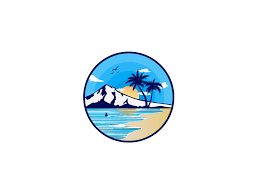

Sydney
Sydney (/ˈsɪdni/ (listen) SID-nee) is the capital city of the state of New South Wales, and the most populous city in both Australia and Oceania.[5] Located on Australia's east coast, the metropolis surrounds Sydney Harbour and extends about 70 km (43.5 mi) towards the Blue Mountains to the west, Hawkesbury to the north, the Royal National Park to the south and Macarthur to the south-west.[6] Sydney is made up of 658 suburbs, spread across 33 local government areas. Residents of the city are known as "Sydneysiders".[7] The 2021 census recorded the population of Greater Sydney as 5,231,150,[1] meaning the city is home to approximately 66% of the state's population.[8] Nicknames of the city include the 'Emerald City' and the 'Harbour City'.[9] Aboriginal Australians have inhabited the Greater Sydney region for at least 30,000 years, and Aboriginal engravings and cultural sites are common throughout Greater Sydney. The traditional custodians of the land on which modern Sydney stands are the clans of the Darug, Dharawal and Eora peoples.[10]

Amenities for travel policies
|  |
 |
Culture
Science, art, and history The Art Gallery of New South Wales, located in The Domain, is the fourth largest public gallery in Australia. Ku-ring-gai Chase National Park is rich in Indigenous Australian heritage, containing around 1,500 pieces of Aboriginal rock art – the largest cluster of Indigenous sites in Australia, surpassing Kakadu, which has around 5,000 sites but over a much greater landmass. The State Library of New South Wales The Australian Museum opened in Sydney in 1827 with the purpose of collecting and displaying the natural wealth of the colony. The State Library of New South Wales holds the oldest library collections in Australia, being first established as the Australian Subscription Library in 1826. The Museum of Contemporary Art was opened in 1991 and occupies an Art Deco building in Circular Quay.